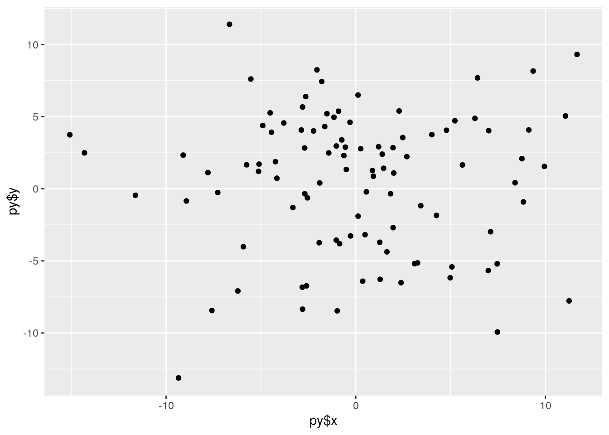

May 8, 2021
While debate between both programming languages will always exists, it was incredibly interesting to examine how quite similar both R and Python are in achieving the same output. As I’ll discuss later, there are methods for R and Python to communicate with each other, whether it be through python within R, or R within python! For now I want to highlight an example of python’s mirror of R’s dpylr functions within tidyverse. To do this, python uses a package called pandas, which contains a set of functions that essentially mirror R’s dply functions just with different names. For example, R’s mutate function can be completed in python using the assign function. To plot data, python uses Seaborn, as opposed to ggplot2.
 In R’s favor though, python lacks many built in functions, limiting its base functioning. Below I create a list in python and then I will add 10 to each point. While in R, one could simply add 10 to each value in the list through list1+10. Python isn’t immediately vectorized and instead loops must be generated to add 10 to each value (Although the numpy function fixes this).
In R’s favor though, python lacks many built in functions, limiting its base functioning. Below I create a list in python and then I will add 10 to each point. While in R, one could simply add 10 to each value in the list through list1+10. Python isn’t immediately vectorized and instead loops must be generated to add 10 to each value (Although the numpy function fixes this).
list1=[25,50,75,100,125]
for i in list1: print(i+10)## 35
## 60
## 85
## 110
## 135To communicate across R and python, we need the help from the reticulate package. Once installed within R, reticulate allows us to transverse the two languages! Here, data is generated in python, then called in R and plotted with help from the reticulate package!
import numpy as np
x=np.random.normal(0,5,100)
y=np.random.normal(0,5,100)library(reticulate)
library(ggplot2)
ggplot()+geom_point(aes(py$x,py$y))